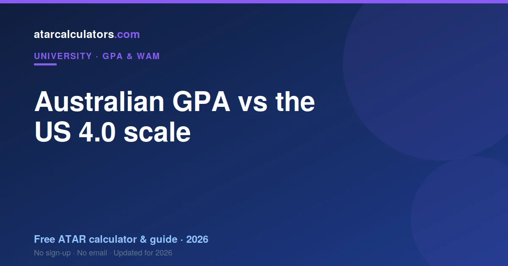
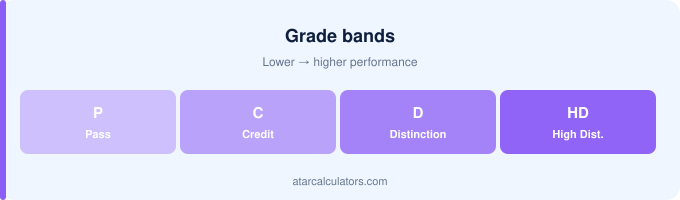

Australia mainly uses a 7-point GPA, where High Distinction is 7, while the US uses a 4.0 scale, where an A is 4. The two are not interchangeable, and there is no single official conversion. Credential services such as WES map grades band by band rather than by a formula. As a rough guide, a top Australian GPA near 7 corresponds to a top US GPA near 4.
Key takeaways
- Australia mainly uses a 7-point GPA (HD = 7).
- The US uses a 4.0 scale (A = 4).
- The two scales are not interchangeable.
- There is no single official conversion.
- Services like WES map grades band by band.
- A top Australian GPA near 7 roughly matches a US GPA near 4.

Two different scales
The core point is simple: Australia and the US use different GPA scales. Australia mainly uses a 7-point scale, where a High Distinction is 7. The US uses a 4-point scale, where an A is 4.
So the same performance produces very different numbers. A strong Australian student might have a GPA of 6, while a strong American student has a GPA of 3.7. Neither is higher than the other; they are just on different scales.
This is why quoting your Australian GPA to a US audience, or vice versa, without explaining the scale, causes confusion. The number means nothing without the scale it sits on.
Why the scales differ
The scales differ because they grew out of different grading traditions. Australia grades in bands, from Pass to High Distinction, which map naturally onto a 7-point scale. The US grades in letters, A to F, which map onto a 4-point scale.
Neither system is better; they are just different conventions. The important thing is to know which scale a GPA is on before you interpret it, since the same number means very different things on each.
Why there is no single conversion
There is no official, universal formula to convert an Australian GPA to a US one. This surprises people, but it follows from the fact that the two systems define their grade bands differently.
Because the mark ranges for each grade differ between the two countries, and even between universities, a single multiplier cannot capture the mapping accurately. Any “conversion formula” you see online is an approximation at best.
So the honest answer is that conversion is done by careful mapping, not arithmetic. This matters most when the stakes are high, such as a competitive US application.
A rough comparison
With that caveat, here is a rough sense of how the scales line up at the top and bottom. Treat this as indicative only, not a precise conversion.
| Australian (7-point) | Roughly equivalent US (4.0) |
|---|---|
| 7.0 (HD average) | ~4.0 (A) |
| 6.0 (Distinction average) | ~3.7 (A-/B+) |
| 5.0 (Credit average) | ~3.3 (B+/B) |
| 4.0 (Pass average) | ~2.7 (B-/C+) |
The middle of the range is where the mapping is least reliable, because the two systems compress grades differently. So the further you are from the top, the more you should rely on an official assessment rather than this table.
How credential services convert
For serious applications, credential evaluation services such as WES assess your transcript and map each grade to a US equivalent, band by band. They use documented conversion tables for each institution and country.
This is more accurate than any single formula, because it accounts for how your specific university defines its grades. If a US institution requires a formal conversion, they will usually tell you which service to use.
What does a 6.0 Australian GPA equal?
A 6.0 Australian GPA, a distinction average, roughly corresponds to a US GPA in the high 3s, often cited around 3.7. But this is approximate, and the exact figure depends on your university’s grade bands and the service doing the conversion.
So if someone asks what your distinction average is “in US terms”, high 3s is a reasonable shorthand. For anything official, use a formal assessment rather than this estimate.
If you are applying to the US
When applying to a US university or program, do not simply state your Australian GPA as if it were on the US scale. Either provide your GPA with the scale clearly labelled, or a formal conversion if required.
Most US admissions offices understand international grading and will assess your transcript in context. Being clear about your scale, and following their conversion instructions, avoids your strong results being misread as weak.
A common mistake to avoid
The most common mistake is quoting an Australian GPA to a US audience without the scale. A GPA of 6 sounds impossible on a 4.0 scale, so it reads as an error, when in fact it is a distinction average.
So always attach the scale: “6.0 on a 7-point scale”. That one addition turns a confusing number into a clear, strong result.
Work with your Australian GPA
Before converting anything, make sure you know your Australian GPA accurately. Our GPA calculator gives your GPA on the 7-point scale, which is the starting point for any comparison.
From there, label the scale clearly, and use a formal conversion service only when an application requires it.
Applying to US graduate school
If you are applying to a US graduate program, your Australian GPA is only part of the picture. Many programs also weigh standardised tests, your statement, references and research or work experience, so a scale difference need not disadvantage you.
US admissions offices routinely assess international transcripts and understand that a 7-point scale is not a 4.0 scale. Provide your GPA with the scale labelled, and a formal conversion if the program asks for one, and your results will be read in context.
Sending your transcript abroad
When you send your transcript overseas, it will usually show your grades and your GPA on the Australian scale. Some institutions want a credential evaluation that maps your grades to their local system, done by a recognised service.
So check each institution’s requirement early. If they require a formal evaluation, arrange it in good time, since it can take weeks. If they assess transcripts in-house, a clearly labelled scale is often enough.
What about the UK and Canada?
Other countries use their own systems again. The UK classifies degrees as First, Upper Second, Lower Second and Third, rather than a GPA, while Canada uses various scales including a 4.0 GPA at many institutions.
So converting to those systems is a separate mapping, not the same as the US one. As always, label your Australian scale clearly and follow each institution’s conversion guidance rather than assuming a universal formula.
The practical takeaway
The practical takeaway is simple: never quote a GPA without its scale, and never convert with a single formula when the stakes are high. Label your Australian GPA as being on a 7-point scale, and use a formal evaluation when an institution requires one.
Do that, and your strong Australian results will be read as strong abroad, rather than misunderstood as weak on a scale they were never on.
Getting a formal evaluation
When an overseas institution requires a formal credential evaluation, budget time and money for it. A recognised service reviews your transcript, verifies it, and maps your grades to the local scale, producing a document the institution will accept.
This is more reliable than any self-conversion, because it reflects your specific university’s grading and is independently verified. Start the process early, since evaluations can take several weeks and are often required before an application deadline.
Common questions
How does the Australian 7-point GPA differ from the US 4.0 scale?
Australia mainly uses a 7-point scale where High Distinction is 7, while the US uses a 4.0 scale where an A is 4. The same performance produces very different numbers, so the scale must always be stated.
How do I convert my Australian GPA to a US GPA?
There is no single formula. For serious applications, a credential service such as WES maps each grade to a US equivalent band by band, using conversion tables for your specific university.
Is there an official Australian-to-US GPA conversion?
No universal official conversion exists, because the two systems define grade bands differently. Any online conversion formula is an approximation; formal assessments use documented, institution-specific tables.
What US GPA does a 6.0 Australian GPA equal?
A 6.0 Australian GPA, a distinction average, roughly corresponds to a US GPA in the high 3s, often cited around 3.7. This is approximate and depends on your university and the conversion service.